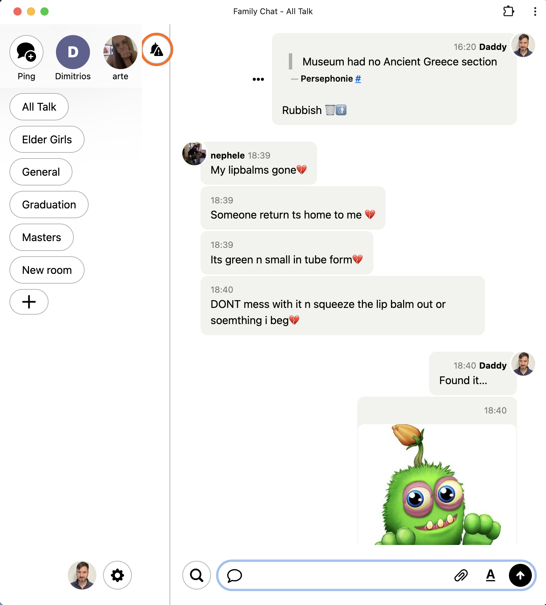

Let's start just a bit earlier than that, If Sam Harris is right and we live life without free will then I am simply a product of the culture, trials and tribulations of those that came before me. In that sense I am the physical product of 2 people.
Anti-Resume
Life summary, kind of:
My father was an engineer, he designed and build parts for a shipyard. My mother was a studio and occasions photographer. I grew up in a small industrial town of 25000 people 11 miles from the capital of my country. It is Eleusis (pronounced: 'elefsis').
My mother's studio was so large that the air-force had it commandeered it in case of war. Oh, yes our kind neighbours always flex their muscles. The late seventies and early eighties were a time of change, I got to experience this in a form of an amazing childhood. My father wanted us to have a lot of different experiences. So, he got a VW T2 and turned it into a campervan. So skiing in the winter and camping by a beach in the summer.
Moreover, things kept getting better and better. We started holidays abroad thanks and due to the new found small increase in wealth my parents bought me my first computer and it was an Amstrad cpc64. It was Christmas 1985 and I was 9 years old. I have never been without a computer since, or 2 or 3 or 18. The first couple of years I just played, with games and Basic. I liked games, don't get me wrong. But at the time they were not as immersive or as addictive as they are now, so they kind of bored me pretty quick.
So, I went to computer school as soon as I could, unfortunately the web had not been born yet and I started creating databases in DBase, I sold my first program for 120.000 drachmas to a Video store, trying to explain what that is to my children is harder than you can imagine. The money paid for more equipment and I was already editing and audio dubbing video cassettes for my mother's photo shop.
The one thing that my older self now understands is that you never know when you'll do something for the last time. Here's a picture of my father and I at Parnassus mountain, the last time we skied together. And of our campervan, the one that took us on many adventures.


As every other young man in Greece, I had to do national service. A 23 month service in the armed forces. Were I got to drive and maintain an armoured personnel carrier. I was stationed at the borders of Albania and Former Yugoslavia during the end of the Bosnian war.
Once I returned from service my father wisely got me in a college were I learned Photoshop and Premiere Pro, I did not learn much more about photography that I didn't already know. Unfortunately, those few years as a young man were wasted. Got in with the wrong crowd, got a bit lost. Athens was not a good place for me at the time. I moved to Corfu where my mother's family is from. I got a job as a Graphic Designer and met my guardian angel, my wife.
When we got pregnant with our second daughter, we decided to move to the UK. My wife's hometown. The sunny Bolton in Greater Manchester. This was 2007 and things were no so bad for both the UK and the EU, yet! When I first got into web design, it was because my late brother needed a website for his business. I quickly managed to build one for him and then started building more and more and more. Coding websites, in the simplest formats possible provided enough difficulty to keep me in the 'flow' state where the difficulty meets the skills and it constantly creates a linear relationship between challenge and satisfaction. I loved it!
But, I was not as good in the business side. Not as bad as my late brother, but I was not as good as I could have been. A few years later is when an opportunity appeared for a UX role in government. I became a Civil Servant, thinking at the time that not having to use dark patterns, deal with customer demands and manipulate users was a good place to be. Not having to deal with the business side was a good thing. It was for a while, but then I got hit with modern agile.
I sometimes think when I listen to Jason and David, that the things they critisise are far worse in reality. It's one thing to be sitting on a bird's eye view of the situation, but it's another to be in the trenches. In an nutshell I'm tired, of endless, aimless meetings. Of constantly chucking unfinished work over the wall. Of being told what to do, by people that don't know what they are talking about or even what they want. More than anything I'm tired of the bullshit, and the cherry on the cake is that the Tax Man is taking around 55% of my pay (45% plus extra insurance, and a few other things).
I purchased a Campfire license some time ago and I have been using it for a family chat. The children love it.

When I watched Jason Zimdars's talk on the CSS I was really impressed, I was even more impressed looking at the code and reading his blog. I removed the campfire logo and aligned everything to the left. So I started wondering. Could I learn all the new CSS features, could I use them so coherently? My initial inner thought was 'DAMN that's good!' but then I realised, if I had 4 good deep focus work hours per day. If I did not have chat's, emails, meetings, etc. Could I do it? Damn right I could!
In the past decade or so, I have designed some great apps. From public facing websites used by millions of people to internal tools for a few hundred civil servants. I am even building a Video tutorial CRUD app for teaching others how to code government services. I am using Next.js, do not tell David.
The UK is uniqely fucked as David told me once, on what I assume was a quick reply on his Hey mail. I want out. I want the freedom to go to where I am valued, to work with people that know what they're doing. I want to be able to code, to design, to build things that make people happy to use. I want to provide for my family and live in a country that is not run by a bunch of self serving idiots. (Finding that country is not going to be easy at all, but I am aiming for optionality here.)
Worst case scenario, I'll just go back to Greece and live on an island. Repatriation tax cuts, the culture and climate will compensate for the lack of everything else. I will rent a house, with a small plot of land and a small boat. I'll grow vegetables, I'll fish and I'll code. I'll be happy. My wife will be happy. My children will be happy.The world will be a better place.